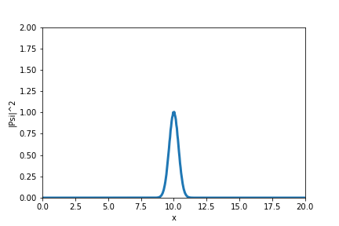
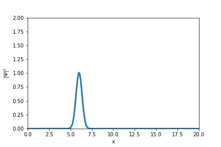

Basic quantum mechanics: the Schrodinger equation
Introduction
Many of us know the main properties of the wave function, a probability amplitude of complex value that is responsible for describing the state of an isolated quantum system, as is also clear its mathematical origin, the Schrodinger equation. Despite dealing daily with this impressive relationship between physics and mathematics, this week I decided to take a little extra time to review its fundamentals and study its details again, since I only did this the first time I studied the fundamentals of quantum mechanics during my graduation.
Here, taking advantage of the opportunity given the advancement of my knowledge about MQ and different programming and visualization tools, I decided to produce a publication on this blog in order to share this knowledge in a different way to what is usually found on the internet, in a more constructive and visual way.
Time dependent Schrödinger equation
The idea we are going to use here is that: we want to describe an electron wavefunction by a wavepacket $\psi (x,y)$ that is a function of position $x$ and time $t$. We can than assume that the electron is initially localized around $x_0$, and following the uncertainty principle, we can model the system by a Gaussian multiplying a plane wave (wich we know as a phase in the wave function):
$$\psi(x,t=0)=\exp{\left[-\frac{1}{2}\left(\frac{x-x_0}{\sigma _0} \right)^2\right ]} e^{ik_0x} $$
As mentioned before, this wave function does not correspond to an electron with a well defined momentum. However, if the width of the Gaussian $\sigma _0$ is made very large, the electron gets spread over a sufficiently large region of space and can be considered as a plane wave with momentum $k_0$ with a slowly varying amplitude, that is, we are dealing with a system coherent with the ideas of Heisenberg.
The behavior of this wave packet as a function of time is described by the time-dependent Schröedinger equation (here in 1d):
$$i\frac{\partial \psi}{\partial t}=H\psi(x,t).$$
$H$ is the Hamiltonian operator:
$$H=-\frac{1}{2m}\frac{\partial ^2}{\partial x^2}+V(x),$$
where $V(x)$ is a time independent potential. The Hamiltonian is chosen to be real. Note that we have picked the energy units such that $\hbar=1$, and from now on, we will pick mass units such that $2m=1$ only to make equations simpler.
Scrhödinger’s equation is obviously a P.D.E., we can then proceed through the usual methods known to solve this type of equation. The main observation is that this time we have to deal with complex numbers, and the function $\psi (x,y)$ has real and imaginary parts:
$$\psi (x,t) = R(x,t)+iI(x,t).$$
However, is this section we will present an alternative method that makes the quantum mechanical nature of this problem more transparent.
The wave function properties
Before we proceed, I would like to list here the main properties of the wave function, which is effectively the solution of the Schrodinger equation defined previously.
- Linearity:
If $\Psi_1(x,t)$ is a solution for the Schrödinger equation and $\Psi_2(x,t)$ is also a solution then any linear combination $\Psi(x,t) = \alpha \Psi_1(x,t) + \beta \Psi_2(x,t)$ is a solution where $\alpha$ and $\beta \in \mathbb{C}$.
- Unitarity:
The wave function is unitary (for real potentials) which means it preservers the probability distribution through the evolution of time
$$ \frac{d}{dt} \int_{- \infty}^{\infty} |\Psi(x,t)|^2 dx = 0 $$
- Deterministic:
If we have complete knowledge of the system at some moment of time $t_0$, $\Psi(x,t_0)$ we can determine unambiguously the wave function in all subsequent of time $\Psi(x,t)$.
The time-evolution operator
The Scrödinger equation presented in the previous section can be integrated in a formal sense to obtain:
$$\psi(x,t)=U(t)\psi(x,t=0)=e^{-iHt}\psi(x,t).$$
From here we deduce that the wave function (which is unitary, then its norm is preserved during the following operation) can be evolved forward in time by applying the time-evolution operator $U(t)=\exp{-iHt}$:
$$\psi(t+\Delta t)= e^{-iH\delta t}\psi(t).$$
Likewise, the inverse of the time-evolution operator moves the wave function back in time:
$$\psi(t-\Delta t)=e^{iH\Delta t}\psi(t),$$
where we have use the property $$U^{-1}(t)=U(-t).$$ Although it would be nice to have an algorithm based on the direct application of $U$, it has been shown that this is not stable. Hence, we apply the following relation:
$$\psi(t+\Delta t)=\psi(t-\Delta t)+\left[e^{-iH\Delta t}-e^{iH\Delta t}\right]\psi(t).$$
Now, the derivatives with recpect to $x$ can be approximated by
$$\begin{aligned} \frac{\partial \psi}{\partial t} &\sim& \frac{\psi(x,t+\Delta t)-\psi(x, t)}{\Delta t}, \\ \frac{\partial ^2 \psi}{\partial x^2} &\sim& \frac{\psi(x+\Delta % x,t)+\psi(x-\Delta x,t)-2\psi(x,t)}{(\Delta x)^2}. \end{aligned}$$
The time evolution operator is approximated by:
$$U(\Delta t)=e^{-iH\Delta t} \sim 1+iH\Delta t.$$
Replacing the expression for $H$, we obtain:
$$\psi(x,t+\Delta t)=\psi(x,t)-i[(2\alpha+\Delta t V(x))\psi(x,t)-\alpha(\psi(x+\Delta x,t)+\psi(x-\Delta x,t))], $$
with $\alpha=\frac{\Delta t}{(\Delta x)^2}$. The probability of finding an electron at $(x,t)$ is given as we know by the probability density of the wave funciton, which can be obtained by multiplying it by its complex conjugate, or as we well know $|\psi(x,t)|^2$. This equations do not conserve this probability exactly, but the error is of the order of $(\Delta t)^2$. Note that the convergence can be determined by using smaller steps.
We can write this expression explicitly for the real and imaginary parts, becoming:
$$\begin{aligned} \mathrm{Im} \psi(x, t + \Delta t) = \mathrm{Im} \psi(x, t) + \alpha \mathrm{Re} \psi (x + \Delta x, t) + \alpha \mathrm{Re}\psi(x − \Delta x, t) − (2\alpha + \Delta t V (x)) \mathrm{Re} \psi(x, t) \\ \mathrm{Re} \psi(x, t + \Delta t) = \mathrm{Re} \psi(x, t) − \alpha \mathrm{Im} \psi (x + \Delta x, t) − \alpha \mathrm{Im} \psi (x − \Delta x, t) + (2\alpha + \Delta tV (x)) \mathrm{Im} \psi(x, t) \end{aligned}$$
Notice the symmetry between these equations: while the calculation of the imaginary part of the wave function at the later time involves a weighted average of the real part of the wave function at diferent positions from the earlier time, the calculation of the real part involves a weighted average of the imaginary part for di erent positions at the earlier time. This intermixing of the real and imaginary parts of the wave function may seem a bit strange, but remember that this situation is a direct result of our breaking up the wave function into its real and imaginary parts in the first place!
Experimenting in python: The Harmonic Potential
Now, let's try the exercise of animating the behavior of a Gaussian wave-packet moving along the $x$ axis under action of a harmonic potential!
%matplotlib inline
import numpy as np
from matplotlib import pyplot
import math
import matplotlib.animation as animation
from IPython.display import HTML
lx=20
dx = 0.04
nx = int(lx/dx)
dt = dx**2/20.
V0 = 60
alpha = dt/dx**2
fig = pyplot.figure()
ax = pyplot.axes(xlim=(0, lx), ylim=(0, 2), xlabel='x', ylabel='|Psi|^2')
points, = ax.plot([], [], marker='', linestyle='-', lw=3)
psi0_r = np.zeros(nx+1)
psi0_i = np.zeros(nx+1)
x = np.arange(0, lx+dx, dx)
#Define your potential
V = np.zeros(nx+1)
V = V0*(x-lx/2)**2
#Initial conditions: wave packet
sigma2 = 0.5**2
k0 = np.pi*10.5
x0 = lx/2
for ix in range(0,nx):
psi0_r[ix] = math.exp(-0.5*((ix*dx-x0)**2)/sigma2)*math.cos(k0*ix*dx)
psi0_i[ix] = math.exp(-0.5*((ix*dx-x0)**2)/sigma2)*math.sin(k0*ix*dx)
def solve(i):
global psi0_r, psi0_i
for ix in range(1,nx-2):
psi0_i[ix]=psi0_i[ix]+alpha*psi0_r[ix+1]+alpha*psi0_r[ix-1]-(2.*alpha+dt*V[ix])*psi0_r[ix]
for ix in range(1,nx-2):
psi0_r[ix]=psi0_r[ix]-alpha*psi0_i[ix+1]-alpha*psi0_i[ix-1]+(2.*alpha+dt*V[ix])*psi0_i[ix]
points.set_data(x,psi0_r**2 + psi0_i**2)
return (points,)
anim = animation.FuncAnimation(fig, solve, frames = 1000, interval=50)
HTML(anim.to_jshtml())

Adding a potential barrier
Let's try to do it one more time, but now lets do a Gaussian wave-packet moving along the x axis passing through a potential barrier, which is a situation that i have to deal daily in my research works. To avoid tunneling (which a haven't mentioned in this post, so I'm going to save it to another special post), we are going to set a really high potential compared to the energy of our wave, so most of the wave is going to be reflected by the potential
import matplotlib.animation as animation
from IPython.display import HTML
fig = pyplot.figure()
ax = pyplot.axes(xlim=(0, lx), ylim=(0, 2), xlabel='x', ylabel='$|\Psi|^2$')
points, = ax.plot([], [], marker='', linestyle='-', lw=3)
x0=6
for ix in range(0,nx):
psi0_r[ix] = math.exp(-0.5*((ix*dx-x0)**2)/sigma2)*math.cos(k0*ix*dx)
psi0_i[ix] = math.exp(-0.5*((ix*dx-x0)**2)/sigma2)*math.sin(k0*ix*dx)
x = np.arange(0, lx+dx, dx)
V = np.zeros(nx+1)
for ix in range(nx//2-20,nx//2+20):
V[ix]=2000.
def solve(i):
global psi0_r, psi0_i
psi0_r[1:-1] = psi0_r[1:-1]- alpha*(psi0_i[2:]+psi0_i[:-2]-2*psi0_i[1:-1])+dt*V[1:-1]*psi0_i[1:-1]
psi0_i[1:-1] = psi0_i[1:-1]+ alpha*(psi0_r[2:]+psi0_r[:-2]-2*psi0_r[1:-1])-dt*V[1:-1]*psi0_r[1:-1]
points.set_data(x,psi0_r**2 + psi0_i**2)
return points
anim = animation.FuncAnimation(fig, solve, frames = 1000, interval=20)
HTML(anim.to_jshtml())

The last challenge: Single-slit diffraction
Young’s single-slit experiment consists of a wave passing though a small slit, which causes the emerging wavelets to intefere with eachother forming a diffraction pattern. In quantum mechanics, where particles are represented by probabilities, and probabilities by wave packets, it means that the same phenomenon should occur when a particle (electron, neutron) passes though a small slit. Here, lets consider a wave packet of initial width 3 incident on a slit of width 5, and plot the probability density $|\psi ^2|$ as the packet crosses the slit, while generalizing the time-evolution equation for 2 dimensions. The model of the slit with a potential wall is so that:
$$V(x,y)=100 \,\,\,\,\,\ \mathrm{for}\,\,x=10,|y|\geq 2.5.$$
%matplotlib inline
import numpy as np
from matplotlib import pyplot
import math
lx = 20 #Box length in x
ly = 20 #Box length in y
dx = 0.25 #Incremental step size in x (Increased this to decrease the time of the sim)
dy = dx #Incremental step size in y
nx = int(lx/dx) #Number of steps in x
ny = int(ly/dy) #Number of steps in y
dt = dx**2/20. #Incremental step size in time
sigma2 = 0.5**2 #Sigma2 Value
k0 = np.pi*10.5 #K0 value
amp = math.pow(1./2., 64) #Amplitude (to avoid large values out of range. This was one issue)
alpha = (dt/2.)/dx**2 #Alpha
psi0_r = np.zeros(shape=(ny+1,nx+1)) #Initialize real part of psi
psi0_i = np.zeros(shape=(ny+1,nx+1)) #Initialize imaginary part of psi
V = np.zeros(shape=(ny+1,nx+1)) #Initialize Potential
#Define your potential wall
V = np.zeros(shape=(ny+1,nx+1))
for ix in range(nx//2-20,nx//2+20):
for iy in range(0,ny):
if(abs(iy*dy-ly/2)>2.5):
V[iy,ix] = 200.
#Initial conditions: wave packet
x0 = 6.
y0 = ly/2.
for x in range(0,nx):
for y in range(0,ny):
psi0_r[y,x] = math.exp(-0.5*((x*dx-x0)**2+(y*dy-y0)**2)/sigma2)*math.cos(k0*x*dx)
psi0_i[y,x] = math.exp(-0.5*((x*dx-x0)**2+(y*dy-y0)**2)/sigma2)*math.sin(k0*x*dx)
x = np.arange(0, lx+dx, dx)
y = np.arange(0, ly+dy, dy)
X, Y = np.meshgrid(x, y)
pyplot.contourf(X,Y,psi0_r**2+psi0_i**2)
pyplot.contour(X,Y,V)
#Function to solve incremental changes in psi
def solve():
#Grab psi lists
global psi0_r, psi0_i
#Calculate Imaginary Part in all points except for last 2 (because of indice notation)
for x in range(1,nx-2):
for y in range(1,ny-2):
psi0_i[y,x] = psi0_i[y,x] + alpha*psi0_r[y,x+1] + alpha*psi0_r[y,x-1] - (2*alpha + dt*V[y,x])*psi0_r[y,x] + alpha*psi0_r[y+1,x] + alpha*psi0_r[y-1,x] - (2*alpha+dt*V[y,x])*psi0_r[y,x]
#Calculate Real Part in all points except for last 2 (because of indice notation)
for x in range(1,nx-2):
for y in range(1,ny-2):
psi0_r[y,x] = psi0_r[y,x] - alpha*psi0_i[y,x+1] - alpha*psi0_i[y,x-1] + (2*alpha + dt*V[y,x])*psi0_i[y,x] - alpha*psi0_i[y+1,x] - alpha*psi0_i[y-1,x] + (2*alpha+dt*V[y,x])*psi0_i[y,x]
for i in range(1000):
solve()
pyplot.contourf(X,Y,psi0_r**2+psi0_i**2);
![No description has been provided for this image]()